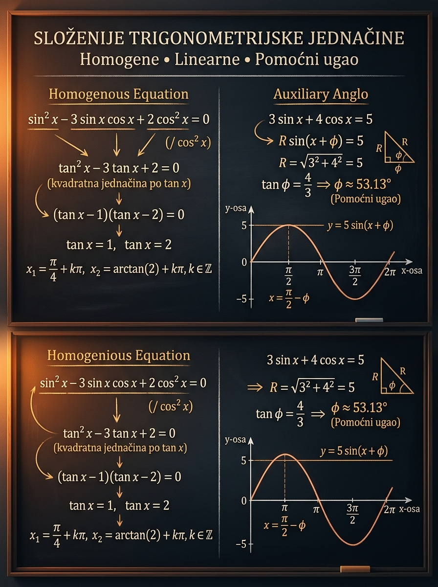

Da odmah izabereš odgovarajući metod, svedeš jednačinu na bazni oblik i pravilno zapišeš sve porodice rešenja.
Matoteka znanje · Lekcija 40
Složenije trigonometrijske jednačine
Na prijemnom složena trigonometrijska jednačina najčešće ne traži „novu” matematiku, već dobru procenu metode. Treba da vidiš da li je pred tobom homogeni obrazac koji vodi ka \( \tan x \), ili linearni oblik koji treba sabiti u jedan sinus pomoću ugla \( \varphi \). Kada to prepoznaš, ostatak zadatka postaje pregledan.
\[A\sin^2 x + B\sin x\cos x + C\cos^2 x = 0\]
\[a\sin x + b\cos x = c\]
Da podeliš jednačinu bez provere izgubljenih rešenja ili da zaboraviš da linearna jednačina mora zadovoljiti uslov \( |c| \le R \).
Brojanje i zbir korena na intervalu, uz brzo prepoznavanje da li je jednačina homogena ili linearna.

Zašto je ova lekcija važna
Ovde prepoznavanje obrasca postaje važnije od samog računa
U prethodnoj lekciji učio si kako se rešava bazni oblik kada ga već vidiš. Sada učiš ozbiljniju veštinu: kako da do tog baznog oblika stigneš bez gubitka rešenja. To je trenutak kada trigonometrija na prijemnom počinje da liči na stvaran problem, a ne samo na primenu gotove formule.
Mnogo složeniji identiteti i jednačine na kraju se svedu upravo na homogeni obrazac ili na pomoćni ugao. Ako ovde nisi siguran, kasnije ćeš znati teoriju, ali nećeš umeti da je primeniš.
Na prijemnom je čest zahtev da odrediš koliko rešenja ima na intervalu \( [0,2\pi] \), \( [-\pi,\pi] \) ili koliki je zbir svih korena u tom opsegu. Bez opšteg rešenja takav zadatak nije bezbedno rešiv.
Ova lekcija te tera da proveravaš šta smeš da deliš, kada rešenja ne postoje i kako se dobijene vrednosti za \(t=\tan x\) vraćaju na stvarne uglove. Upravo tu učenici najčešće gube poene.
Ključna pedagoška ideja: složena trigonometrijska jednačina gotovo nikad nije potpuno nova. Tvoj posao je da u njoj prepoznaš poznatu strukturu i vratiš je na osnovnu jednačinu koju već umeš da rešiš.
Mapa metoda
Kako da za deset sekundi odrediš kojim putem ideš
Najveći problem učenika nije manjak formula, nego pogrešan izbor metode. Zato prvo gradiš refleks: šta u jednačini treba da primetiš pre nego što kreneš da računaš.
- Svi članovi imaju isti ukupan stepen u \( \sin x \) i \( \cos x \).
- Tipičan oblik je \( A\sin^2 x + B\sin x\cos x + C\cos^2 x = 0 \).
- Takva jednačina se najčešće deli sa \( \cos^2 x \) ili \( \sin^2 x \), pa prelazi u jednačinu po \( \tan x \) ili \( \cot x \).
- Pre deljenja uvek proveravaš da li se time gube posebna rešenja, na primer \( \cos x = 0 \).
- Pojavljuje se zbir prvog stepena: \( a\sin x + b\cos x = c \).
- Takav izraz sabijaš u oblik \( R\sin(x+\varphi) \) ili \( R\cos(x-\delta) \).
- Broj \(R\) meri amplitudu cele leve strane i odmah govori da li realna rešenja mogu da postoje.
- Posle transformacije više nema „složene” jednačine, već obična jednačina za sinus ili kosinus.
\[\text{Da li svi članovi imaju isti stepen u } \sin x \text{ i } \cos x?\]
Ako je odgovor da, verovatno si u homogenom slučaju. To je signal da tražiš način da sve izraziš preko \( \tan x \) ili \( \cot x \).
\[\text{Da li je leva strana oblika } a\sin x+b\cos x?\]
Ako jeste, ne pokušavaj da „pogađaš” ugao. Računaj \(R\) i pomoćni ugao. To je najbrži i najčistiji put.
\[\text{Na koju baznu jednačinu ću završiti?}\]
Kod homogene jednačine najčešće dolazi \( \tan x = t_0 \). Kod pomoćnog ugla završavaš na \( \sin(x+\varphi)=m \) ili \( \cos(x-\delta)=m \).
\[\text{Gde mogu da izgubim rešenja?}\]
Kod homogene jednačine to se dešava pri deljenju. Kod linearne jednačine to se dešava kada izračunaš \(R\), ali zaboraviš da proveriš uslov \( |c| \le R \).
\[\text{prepoznaj tip} \to \text{svedi} \to \text{reši bazni oblik} \to \text{upiši interval}\]
Ovaj redosled je važan zato što sprečava lutanje usred zadatka i drži sve korake pod kontrolom.
\[\text{Opšte rešenje dolazi pre brojanja i sabiranja korena}\]
Najveća ispitna greška je da odmah ubacuješ interval i preskočiš opšti zapis. Tada lako previdiš jednu celu porodicu korena.
Mikro-provera: da li je jednačina \( \sin^2 x - \cos^2 x = 0 \) homogena?
Jeste. Oba člana imaju ukupan stepen \(2\) u \( \sin x \) i \( \cos x \), pa je to homogena jednačina drugog stepena. Možeš je rešiti i faktorisanjem i svođenjem preko \( \tan x \).
Homogene jednačine
Kada svi članovi imaju isti stepen, cilj je da ih svedeš na jednu funkciju
Najčešći model na prijemnom je homogena jednačina drugog stepena. Na papiru izgleda komplikovano, ali njena ideja je vrlo racionalna: čim svi članovi imaju isti stepen, deljenjem možeš da ukloniš višak trigonometrijskih funkcija i pretvoriš zadatak u algebarsku jednačinu.
U izrazu \[ A\sin^2 x + B\sin x\cos x + C\cos^2 x = 0 \] svaki član ima ukupno dva faktora sinus/kosinus. Kada podeliš sa \( \cos^2 x \), dobijaš \[ A\tan^2 x + B\tan x + C = 0. \]
Tada trigonometrijski problem postaje obična kvadratna jednačina.
Ako deliš sa \( \cos^2 x \), moraš najpre da proveriš slučaj \( \cos x = 0 \), odnosno \[ x=\frac{\pi}{2}+k\pi. \]
Ako originalna jednačina tada važi, ta porodica rešenja mora da se dopiše posebno.
1
Proveri poseban slučaj koji bi deljenjem nestao
Ako deliš sa \( \cos^2 x \), proveravaš \( \cos x = 0 \). Ako deliš sa \( \sin^2 x \), proveravaš \( \sin x = 0 \). Ovo je korak koji čuva sva rešenja.
2
Podeli jednačinu pogodnom potencijom
Kod drugog stepena najčešće deliš sa \( \cos^2 x \). Tada se dobijeni članovi prirodno izražavaju preko \( \tan x \).
3
Uvedi promenljivu \( t=\tan x \)
Posle deljenja dobijaš algebarsku jednačinu u promenljivoj \(t\). Tu koristiš faktorisanje, diskriminantu i sve što već znaš iz algebre.
4
Vrati se sa \(t\) na ugao \(x\)
Kada dobiješ \(t=t_0\), tek tada pišeš \( \tan x=t_0 \), pa sledi \( x=\arctan(t_0)+k\pi \). Ne smeš stati na promenljivoj \(t\).
5
Spoji sve porodice rešenja
Na kraju sabiraš ono što si dobio preko \( \tan x \) i eventualna posebna rešenja poput \( x=\frac{\pi}{2}+k\pi \). Tek tada odgovor je potpun.
Jednačina po \(t\) je samo srednja stanica. Konačan odgovor uvek mora biti zapisan kroz uglove \(x\).
Kada rešenje dolazi iz tangensa, opšte rešenje ima oblik \( x=\alpha+k\pi \), jer tangens ponavlja vrednosti na pola kruga.
Deljenje bez prethodne provere ume da izbaci baš onu porodicu rešenja koju je zadatak sakrio kao zamku.
Ako odmah vidiš zajednički faktor, iskoristi ga. Nije poenta nasilno gurati svaku homogenu jednačinu u isti obrazac ako postoji elegantniji put.
Mikro-provera: zašto homogena jednačina često daje periodu \(k\pi\)?
Zato što se posle deljenja homogena jednačina najčešće svodi na oblik \( \tan x = t_0 \). A tangens ima periodu \( \pi \), pa svaka vrednost \(t_0\) daje porodicu \( x=\arctan(t_0)+k\pi \).
Linearne jednačine i pomoćni ugao
Jedan zbir sinusa i kosinusa možeš da pretvoriš u jedan pomeren talas
Ovo je metod koji učenicima često izgleda kao trik, ali zapravo ima vrlo jasan smisao: dva izraza iste periode sabijaju se u jedan sinus ili kosinus iste periode. Time složena jednačina prestaje da bude složena.
Izraz \( a\sin x+b\cos x \) opet je oscilacija. Zato mora imati neku amplitudu \(R\) i neki fazni pomeraj \( \varphi \), pa možeš da ga napišeš kao \[ R\sin(x+\varphi). \]
Kada to uradiš, sva složenost zadatka nestaje i ostaje osnovna jednačina za sinus.
Biraš \(R\) i \( \varphi \) tako da važi \[ a=R\cos\varphi,\qquad b=R\sin\varphi. \] Tada je \[ R\sin(x+\varphi)=R\sin x\cos\varphi+R\cos x\sin\varphi=a\sin x+b\cos x. \]
\[ R=\sqrt{a^2+b^2} \]
Broj \(R\) je najveća moguća apsolutna vrednost cele leve strane. Zato već pre rešavanja znaš da je potreban uslov \( |c| \le R \).
\[ \cos\varphi=\frac{a}{R},\qquad \sin\varphi=\frac{b}{R} \]
Ugao \( \varphi \) nije slučajan dodatak, nego precizno biraš njegov sinus i kosinus da bi se koeficijenti \(a\) i \(b\) pravilno pojavili ispred \( \sin x \) i \( \cos x \).
\[ a\sin x+b\cos x=c \Longleftrightarrow R\sin(x+\varphi)=c \]
Posle ove zamene više nema nikakve misterije: rešavaš baznu jednačinu potpuno isto kao u prethodnoj lekciji.
\[ |c|\le R \]
Ako je desna strana veća od amplitude, jednačina nema realna rešenja. Ovaj uslov često daje najbržu proveru na testu.
\[ \sin(x+\varphi)=1 \quad \text{ili} \quad \sin(x+\varphi)=-1 \]
Tada u jednom punom krugu nema dve različite grane, već samo jedna porodica rešenja sa periodom \(2\pi\).
\[\text{opšte rešenje} \Rightarrow \text{vrednosti }k \Rightarrow \text{lista korena}\]
Ovaj redosled važi i za homogene i za linearne jednačine. Ne preskači ga čak ni kada ti se čini da vidiš rešenja „iz glave”.
Brzo pravilo za pamćenje: homogena jednačina te obično vodi ka tangensu, pa zato često završavaš sa \(k\pi\). Pomoćni ugao te vraća na sinus ili kosinus, pa koristiš pravila iz osnovnih trigonometrijskih jednačina.
Interaktivni deo
Laboratorija za homogenu redukciju i pomoćni ugao
Izaberi režim rada, menjaj koeficijente i prati šta se dešava. Gornji panel prikazuje graf originalne leve strane, a donji pokazuje gde tačno padaju rešenja na intervalu. Cilj laboratorije je da ti poveže račun sa slikom: homogena jednačina se svodi na \( \tan x \), a linearna na talas \( R\sin(x+\varphi) \).
Brzi primeri
U homogenom režimu proveravaj kada je potrebno posebno izdvojiti slučaj \( \cos x = 0 \). U linearnom režimu prvo posmatraj odnos između \( |c| \) i amplitude \(R\): upravo taj odnos odlučuje da li rešenja postoje.
Gornji panel prikazuje graf originalne leve strane i liniju cilja, a donji panel sve konkretne korene na izabranom intervalu.
\[2\sin^2 x-3\sin x\cos x+\cos^2 x=0\]
Homogena jednačina drugog stepena: svi članovi imaju isti ukupan stepen.
Pre deljenja sa \( \cos^2 x \) proveri da li slučaj \( \cos x=0 \) daje posebno rešenje.
\[2\tan^2 x-3\tan x+1=0\]
Dobijeni algebarski oblik govori kako složena jednačina prelazi u poznat problem.
\[x=\arctan \frac12+k\pi \quad \text{ili} \quad x=\frac{\pi}{4}+k\pi\]
Kod homogene redukcije posle tangensa prirodna perioda je \(k\pi\). Kod pomoćnog ugla periodu određuje bazna jednačina za sinus ili kosinus.
\[x=\arctan \frac12,\ \frac{\pi}{4},\ \pi+\arctan \frac12,\ \frac{5\pi}{4}\]
Broj rešenja: 4.
Zbir rešenja: \(\approx 7.176\).
Menjanje intervala ne menja formulu za opšte rešenje, već samo listu konkretnih uglova koji upadaju u zadati opseg.
Najpre uzmi jedan od ponuđenih primera i pokušaj da predvidiš ishod pre nego što pogledaš izlazne kartice. Zatim promeni samo jedan koeficijent i proveri da li razumeš šta se promenilo: diskriminanta, amplituda ili broj rešenja.
U homogenom režimu nula funkcije znači koren jednačine, a u linearnom režimu presek sa horizontalom \(y=c\) znači rešenje. Na taj način vidiš zašto jednačine iste formule ponekad imaju 0, 1, 2 ili više korena na istom intervalu.
Vođeni primeri
Primeri su raspoređeni tako da prvo naučiš metod, pa tek onda ispitne varijacije
U svakom primeru prati tri nivoa razmišljanja: kako prepoznaješ tip jednačine, na šta je svodiš i kako od opšteg rešenja prelaziš na konkretan interval. Taj trokorak je suština cele lekcije.
Primer 1: reši homogenu jednačinu \( 2\sin^2 x-3\sin x\cos x+\cos^2 x=0 \)
Ovo je model koji treba prvi da prepoznaš: svi članovi imaju isti ukupan stepen, pa se jednačina prirodno svodi na \( \tan x \).
Osnovni homogeni model
- Najpre proveri da li \( \cos x=0 \) daje rešenje. Tada leva strana postaje \(2\), pa taj slučaj nije rešenje.
- Sada smeš da podeliš sa \( \cos^2 x \) i dobiješ \[ 2\tan^2 x-3\tan x+1=0. \]
- Faktorišeš: \[ (2\tan x-1)(\tan x-1)=0. \]
- Dobijaš \( \tan x=\frac12 \) ili \( \tan x=1 \).
Prema tome,
\[
x=\arctan\frac12+k\pi \quad \text{ili} \quad x=\frac{\pi}{4}+k\pi,\qquad k\in\mathbb{Z}.
\]
Pošto je jednačina svedena na tangens, perioda je \(k\pi\).
Klasična greška je da učenik napiše samo \( \tan x=\frac12 \) i \( \tan x=1 \), a zaboravi da se vrati na ugao \(x\).
Primer 2: reši jednačinu \( \sin x\cos x-\cos^2 x=0 \)
Ovaj primer je pedagoški važan jer pokazuje kako deljenje može da izgubi rešenja ako ne proveriš poseban slučaj.
Zamka sa deljenjem
- Najpreglednije je faktorisanje: \[ \sin x\cos x-\cos^2 x=\cos x(\sin x-\cos x)=0. \]
- Iz \( \cos x=0 \) dobijaš \[ x=\frac{\pi}{2}+k\pi. \]
- Iz \( \sin x-\cos x=0 \) sledi \( \tan x=1 \), pa je \[ x=\frac{\pi}{4}+k\pi. \]
Zato je kompletan odgovor
\[
x=\frac{\pi}{2}+k\pi \quad \text{ili} \quad x=\frac{\pi}{4}+k\pi,\qquad k\in\mathbb{Z}.
\]
Da si odmah podelio sa \( \cos^2 x \), dobio bi samo \( \tan x-1=0 \) i izgubio celu porodicu \( x=\frac{\pi}{2}+k\pi \).
Primer 3: reši linearnu jednačinu \( \sin x+\cos x=1 \)
Ovo je najbolji prvi primer za pomoćni ugao, jer sve ostaje potpuno egzaktno i pregledno.
Prvi pomoćni ugao
- Računaš amplitudu: \[ R=\sqrt{1^2+1^2}=\sqrt{2}. \]
- Uzimaš \( \varphi=\frac{\pi}{4} \), jer su \[ \cos\varphi=\sin\varphi=\frac{\sqrt2}{2}. \]
- Zato je \[ \sin x+\cos x=\sqrt2\sin\left(x+\frac{\pi}{4}\right). \]
- Jednačina postaje \[ \sin\left(x+\frac{\pi}{4}\right)=\frac{\sqrt2}{2}. \]
Dakle,
\[
x+\frac{\pi}{4}=\frac{\pi}{4}+2k\pi \quad \text{ili} \quad x+\frac{\pi}{4}=\frac{3\pi}{4}+2k\pi,
\]
pa sledi
\[
x=2k\pi \quad \text{ili} \quad x=\frac{\pi}{2}+2k\pi,\qquad k\in\mathbb{Z}.
\]
Primer 4: reši jednačinu \( 3\sin x+4\cos x=5 \)
Ovaj primer pokazuje specijalan slučaj \( |c|=R \), kada u jednom ciklusu dobijaš samo jednu porodicu rešenja.
Jedna porodica
- Računaš \[ R=\sqrt{3^2+4^2}=5. \]
- Uzimaš ugao \( \varphi \) takav da \[ \cos\varphi=\frac35,\qquad \sin\varphi=\frac45. \]
- Tada je \[ 3\sin x+4\cos x=5\sin(x+\varphi), \] pa jednačina prelazi u \[ \sin(x+\varphi)=1. \]
Zato je
\[
x+\varphi=\frac{\pi}{2}+2k\pi,
\]
odnosno
\[
x=\frac{\pi}{2}-\varphi+2k\pi=\arctan\frac34+2k\pi,\qquad k\in\mathbb{Z}.
\]
U jednom punom krugu postoji samo jedno rešenje, jer je desna strana dostigla amplitudu.
Primer 5: nađi zbir korena jednačine \( \sin x+\sqrt3\cos x=\sqrt2 \) na intervalu \( [0,2\pi] \)
Ovo je tipičan ispitni model: nije dovoljno rešiti jednačinu, nego moraš precizno izdvojiti konkretne korene i sabrati ih.
Prijemni zadatak
- Računaš amplitudu: \[ R=\sqrt{1+3}=2. \]
- Pošto su \[ \cos\frac{\pi}{3}=\frac12,\qquad \sin\frac{\pi}{3}=\frac{\sqrt3}{2}, \] dobijaš \[ \sin x+\sqrt3\cos x = 2\sin\left(x+\frac{\pi}{3}\right). \]
- Jednačina postaje \[ \sin\left(x+\frac{\pi}{3}\right)=\frac{\sqrt2}{2}. \]
- Otuda \[ x+\frac{\pi}{3}=\frac{\pi}{4}+2k\pi \quad \text{ili} \quad x+\frac{\pi}{3}=\frac{3\pi}{4}+2k\pi. \]
Zato je opšte rešenje
\[
x=-\frac{\pi}{12}+2k\pi \quad \text{ili} \quad x=\frac{5\pi}{12}+2k\pi.
\]
Na intervalu \( [0,2\pi] \) upadaju koreni
\[
x_1=\frac{5\pi}{12},\qquad x_2=\frac{23\pi}{12},
\]
pa je njihov zbir
\[
x_1+x_2=\frac{28\pi}{12}=\frac{7\pi}{3}.
\]
Česte greške
Ovde studenti najčešće gube poene
U ovoj lekciji greške ne dolaze od teškog računa, već od loše kontrole postupka. To su upravo one greške koje „bole” na prijemnom: rešenje ti deluje logično, a ipak je nepotpuno.
Kod homogene jednačine učenik podeli sa \( \cos x \) ili \( \cos^2 x \), a da prethodno ne proveri \( \cos x = 0 \). Time može da izgubi celu porodicu rešenja.
Posle jednačine po \( \tan x \) napiše se samo \( t_1 \) i \( t_2 \), ali se zaboravi prelaz na uglove \( x=\arctan(t)+k\pi \).
Izračuna se \(R\), ali se pogrešno postavi znak ispred \( \sin\varphi \) ili \( \cos\varphi \), pa transformacija više nije ekvivalentna početnoj jednačini.
U linearnim jednačinama učenik lepo svede izraz na \( R\sin(x+\varphi) \), ali uopšte ne proveri da li desna strana po apsolutnoj vrednosti prelazi amplitudu.
Opšte rešenje je tačno, ali se pri ubacivanju vrednosti za \(k\) previdi krajnja tačka intervala ili se isti koren prebroji dva puta.
U zadatku sa intervalom ili zbirom korena student pokušava odmah da „nagađa” tačne vrednosti. To je nepouzdano i često dovodi do promašenog jednog ciklusa.
Veza sa prijemnim zadacima
Kako se ova tema stvarno pojavljuje na testu
Na prijemnom ove jednačine retko dolaze kao „čista” teorija. Gotovo uvek su upakovane tako da prvo moraš da otkriješ obrazac, a tek onda da računaš.
Prva zamka je da prepoznaš da li jednačina treba da ide na \( \tan x \) ili na pomoćni ugao. To je često važnije od samog kasnijeg računa.
Vrlo često se ne traži samo rešenje, već broj korena u intervalu. To proverava da li zaista razumeš porodice rešenja, a ne samo jedan reprezentativni ugao.
Ovo je omiljeni motiv: izdvojiš konkretne uglove iz opšteg rešenja, poređaš ih i sabereš. Greška se najčešće desi u samom izboru dozvoljenih vrednosti za \(k\).
U linearnom slučaju odmah proveravaš \( |c| \le R \). U homogenom slučaju odmah proveravaš da li deljenje smeš da uradiš bez gubitka posebnih rešenja.
Mini-checklista za ispit: 1. Koji tip jednačine imam? 2. Da li deljenjem mogu da izgubim rešenja ili da li važi \( |c| \le R \)? 3. Koje je opšte rešenje? 4. Koje konkretne vrednosti ulaze u zadati interval?
Vežbe
Vežbaj dok izbor metode ne postane automatski
Najpre sam odredi da li je zadatak homogeni ili linearni. Tek posle toga otvaraj rešenje. Cilj nije da pogodiš formulu, nego da naučiš tok razmišljanja.
Zadatak 1
Reši homogenu jednačinu \( 3\sin^2 x+\sin x\cos x-2\cos^2 x=0 \).
Rešenje
Pošto \( \cos x=0 \) ne daje rešenje, deliš sa \( \cos^2 x \):
\[ 3\tan^2 x+\tan x-2=0. \]
Faktorisanje daje \( (3\tan x-2)(\tan x+1)=0 \), pa sledi
\[ x=\arctan\frac23+k\pi \quad \text{ili} \quad x=-\frac{\pi}{4}+k\pi,\qquad k\in\mathbb{Z}. \]
Zadatak 2
Reši jednačinu \( 2\sin x+2\cos x=\sqrt2 \).
Rešenje
\(R=\sqrt{4+4}=2\sqrt2\), pa je
\[ 2\sin x+2\cos x = 2\sqrt2\sin\left(x+\frac{\pi}{4}\right). \]
Dobijaš
\[ \sin\left(x+\frac{\pi}{4}\right)=\frac12, \] pa je \[ x=\frac{\pi}{12}+2k\pi \quad \text{ili} \quad x=\frac{7\pi}{12}+2k\pi,\qquad k\in\mathbb{Z}. \]
Zadatak 3
Odredi da li jednačina \( 5\sin x-12\cos x=14 \) ima realna rešenja.
Rešenje
Amplituda leve strane je
\[ R=\sqrt{5^2+(-12)^2}=13. \]
Pošto je \( |14| > 13 \), jednačina nema realna rešenja.
Zadatak 4
Koliko rešenja ima jednačina \( \sin x-\cos x=0 \) na intervalu \( [0,2\pi] \)?
Rešenje
\( \sin x-\cos x=\sqrt2\sin\left(x-\frac{\pi}{4}\right) \), pa dobijaš
\[ \sin\left(x-\frac{\pi}{4}\right)=0 \Rightarrow x=\frac{\pi}{4}+k\pi. \]
Na intervalu \( [0,2\pi] \) to su \( \frac{\pi}{4} \) i \( \frac{5\pi}{4} \), pa postoje 2 rešenja.
Zadatak 5
Reši jednačinu \( \sin x\cos x=0 \).
Rešenje
Faktorski oblik je već očigledan:
\[ \sin x\cos x=0 \Rightarrow \sin x=0 \quad \text{ili} \quad \cos x=0. \]
Zato je
\[ x=k\pi \quad \text{ili} \quad x=\frac{\pi}{2}+k\pi,\qquad k\in\mathbb{Z}. \]
Zadatak 6
Nađi zbir svih rešenja jednačine \( \sin x+\cos x=1 \) na intervalu \( [0,2\pi) \).
Rešenje
Iz vođenog primera znaš da je opšte rešenje
\[ x=2k\pi \quad \text{ili} \quad x=\frac{\pi}{2}+2k\pi. \]
Na intervalu \( [0,2\pi) \) ulaze \(0\) i \( \frac{\pi}{2} \), pa je zbir
\[ \frac{\pi}{2}. \]
Završni rezime
Šta moraš da poneseš iz ove lekcije
Ako sledeće četiri ideje postanu automatske, lekcija je zaista sela i moći ćeš sigurnije da rešavaš prijemne zadatke iz trigonometrije.
Homogena jednačina i linearna jednačina ne traže isti metod. Pola uspeha je u brzom prepoznavanju obrasca.
Pre deljenja proveravaš poseban slučaj, a posle kvadratne jednačine po \( \tan x \) obavezno se vraćaš sa \(t\) na ugao \(x\).
Broj \(R=\sqrt{a^2+b^2}\) odmah govori da li rešenja postoje, a pomoćni ugao pretvara komplikovan zbir u osnovnu jednačinu.
Kada je zadat interval ili zbir korena, prvo pišeš opšti oblik, pa tek onda biraš konkretne vrednosti za \(k\).
Ključna poruka
Složena trigonometrijska jednačina ne pobeđuje se novom formulom, nego dobrim izborom jezika. Kada je prevedeš na jezik tangensa ili na jedan pomeren sinus, zadatak prestaje da bude zamršen i vraća se na ono što već znaš.